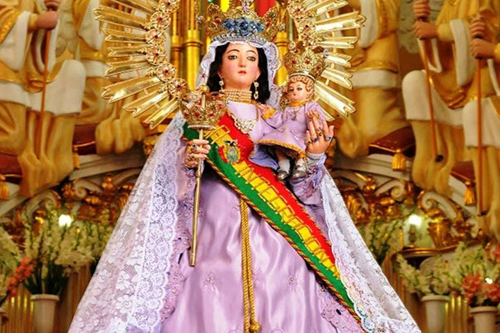

Destinos para disfrutar la Semana Santa en Bolivia
La Semana Santa en Bolivia ofrece una gran variedad de destinos ideales para disfrutar de esta festividad. A continuación, te presentamos tres lugares destacados.
Top destinos recomendados
Copacabana, La Paz
Copacabana es famoso por su imponente Basílica de la Virgen de Copacabana. La peregrinación es uno de los mayores atractivos, y muchos devotos recorren el camino hacia la Virgen para rendirle homenaje.

Miles de fieles llegan cada año durante la Semana Santa para venerar a la Virgen en un ambiente de fe y tradición.

Potosí
Potosí es conocida por sus procesiones de Semana Santa, que rememoran las tradiciones coloniales. Las calles se llenan de música y danzas, mientras los feligreses participan en estas actividades religiosas y culturales.
Totora, Cochabamba
Totora es un pintoresco pueblo que destaca por su arquitectura colonial y sus tradiciones religiosas. Durante la Semana Santa, las calles se llenan de devoción, con actividades litúrgicas y representaciones de la Pasión de Cristo.